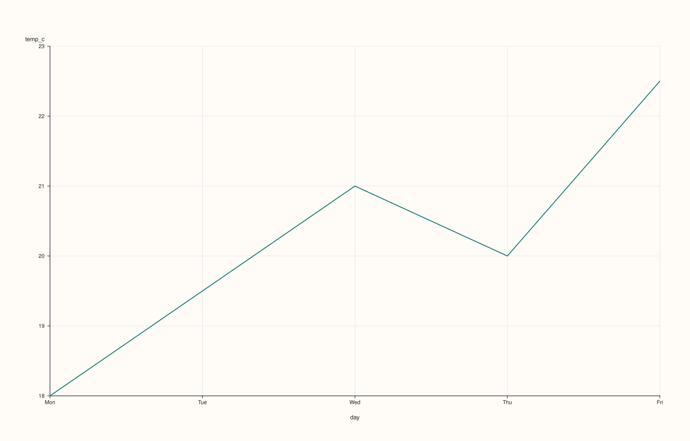
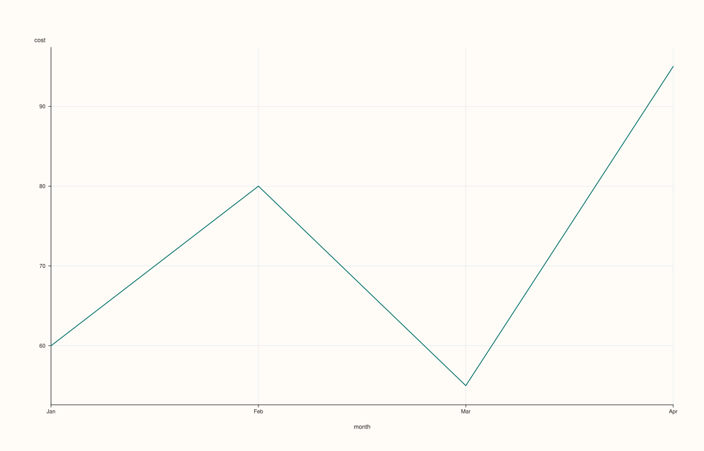
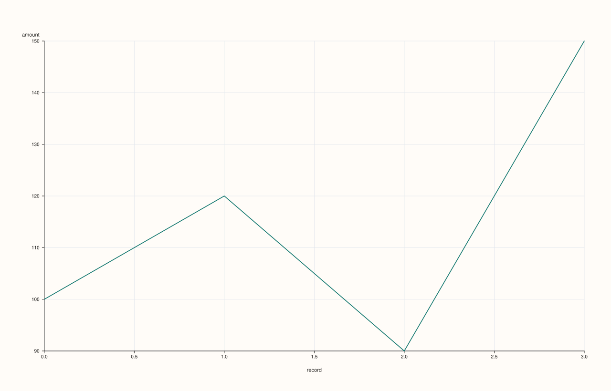
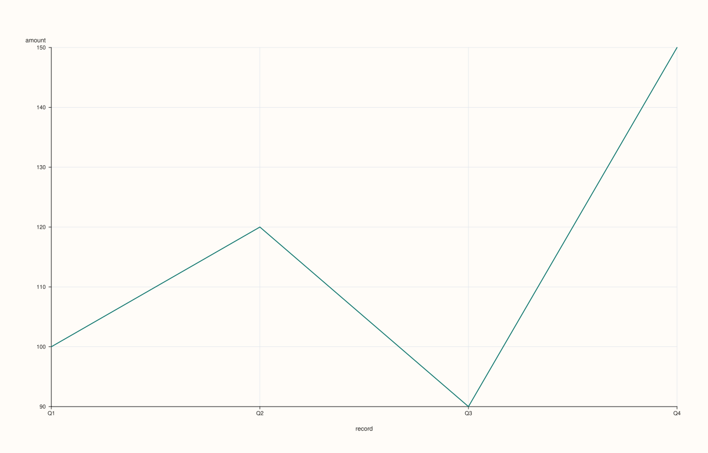
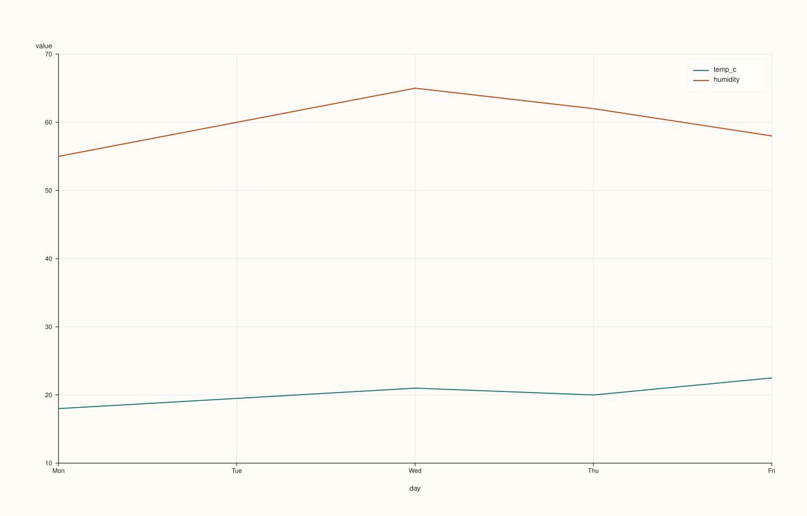
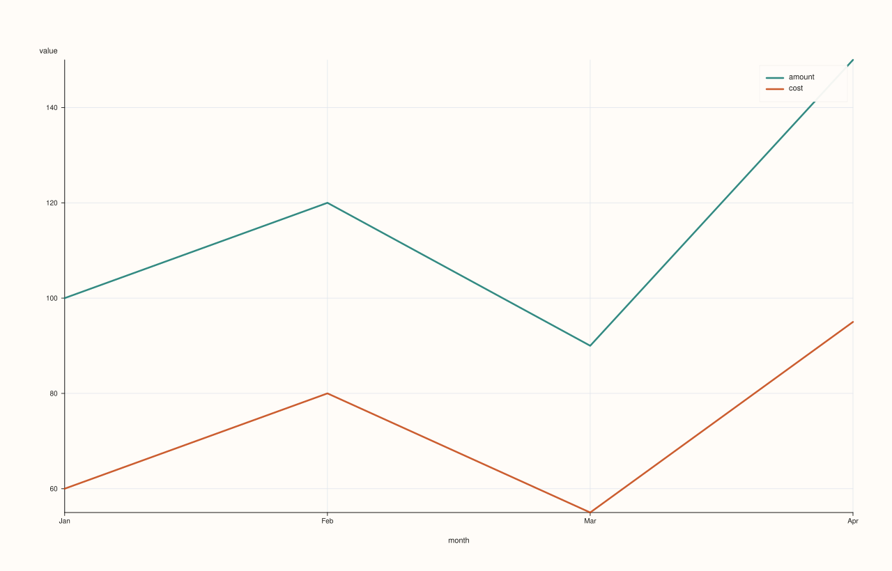
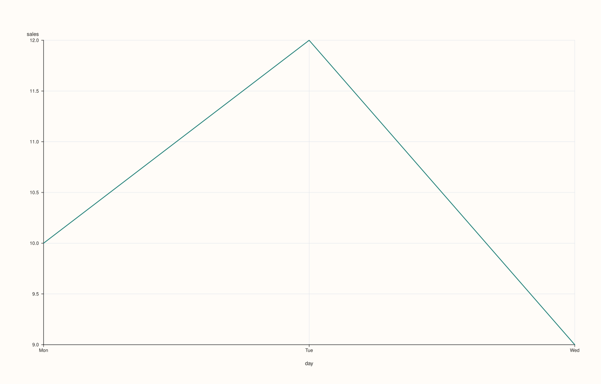
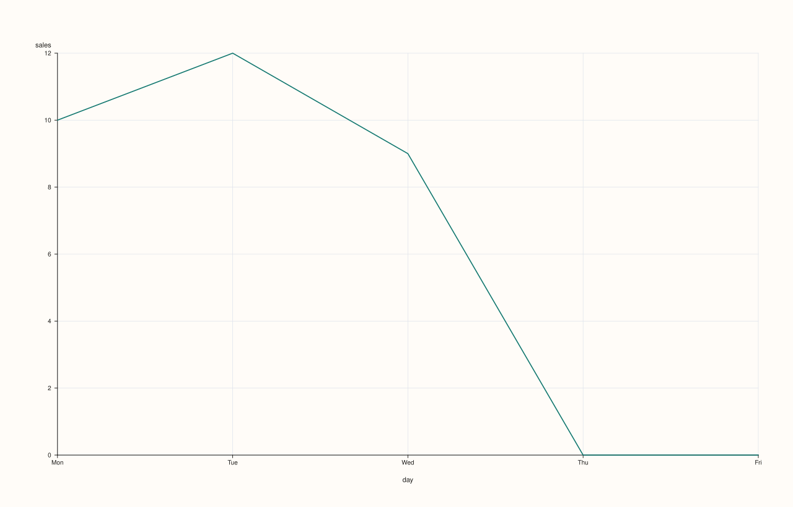

CatalogPlotAccessor::line¶
Back to CatalogPlotAccessor API Reference
Signatures¶
CatalogPlotAccessor::line(std::string_view y_key,
std::optional<std::string_view> x_key = std::nullopt) const -> pluss::pl::Studio
CatalogPlotAccessor::line(pluss::msharp::RangeView::Of<std::string_view> y_keys = {},
std::optional<std::string_view> x_key = std::nullopt) const -> pluss::pl::Studio
CatalogPlotAccessor::line(std::initializer_list<std::string_view> y_keys,
std::optional<std::string_view> x_key = std::nullopt) const -> pluss::pl::Studio
CatalogPlotAccessor::line(std::string_view y_key,
std::optional<std::string_view> x_key,
const LinePlotOptions& options) const -> pluss::pl::Studio
CatalogPlotAccessor::line(pluss::msharp::RangeView::Of<std::string_view> y_keys,
std::optional<std::string_view> x_key,
const LinePlotOptions& options) const -> pluss::pl::Studio
CatalogPlotAccessor::line(std::initializer_list<std::string_view> y_keys,
std::optional<std::string_view> x_key,
const LinePlotOptions& options) const -> pluss::pl::Studio
What It Does¶
Draws one line trace per requested y-key over a shared x-axis, returning a
pluss::pl::Studio figure. This page also explains mechanics shared by every method on
this accessor — step(), area(), scatter(), bar(), and the rest all follow the same
“nothing is drawn until you export it” and x-axis-resolution rules described here, so their
own pages link back to this one instead of repeating it. The three initializer_list
overloads are thin convenience wrappers that forward straight into the matching
RangeView-taking overload — same behavior, just a brace-init call site.
Important
Every plot method returns a Studio, not a Catalog — and nothing prints
line() (like every method on this accessor) builds and returns a pluss::pl::Studio — a
figure object from the separate PlussPl plotting library. It does not print a table,
and Studio has no operator<<, so std::cout << chart will not compile. To actually see
or persist the result, call one of Studio’s own methods afterward:
chart.show()— opens the figure in a native window or the OS default browser/viewer.chart.save_svg("out.svg"),chart.save_pdf("out.pdf"),chart.save_png("out.png", dpi)— write the figure to a file (save_pngshells out to an external SVG-to-raster converter such asrsvg-convert,inkscape, or ImageMagick, and throws if none is found).chart.to_svg()/chart.to_pdf()— return the rendered markup as astd::string, for embedding elsewhere instead of writing a file.
Every example on this page ends with one of these calls to make that visible; none of them
show a rendered “Output” block the way Catalog/Stream method pages do, because there is
no text form of a chart to display.
Choosing the x-axis: three ways to end up with an x-key¶
Every 2D chart method that takes an x_key argument resolves it the same way:
Pass it explicitly —
ct.plot().line("sales", "month")always wins, regardless of any accessor-level default.Set a shared default on the accessor —
ct.plot(options)whereoptions.default_x_feature = "month"lets every subsequent chart method omitx_keyand still use"month". An explicitx_keyargument on a given call still takes precedence over this default. (DataFramePlotOptionsis reused as-is forCatalog::plot()— there is no separateCatalogPlotOptionstype, so the field is still nameddefault_x_featureeven though the value being resolved is a key.)Omit it entirely, with no default set — falls back to the y-key’s own stream label (
Stream::label(), attached viaStream::with_label()), if it has one: the x-axis becomes that label’s values, rendered as evenly spaced categorical positions if text/time-like or as real numeric coordinates if the label is itself numeric — but the axis title is always the literal string"record", never the y-key’s own label feature name. If the y-stream carries no label at all, the axis falls back further, to a bare0..n-1positional index, also titled"record".
See Examples 1, 3, and 4 below for the explicit, no-label, and own-label paths in turn, and Example 2 for the accessor-level default.
Important
With several y-keys and no x_key, each trace still gets its own independent axis
When y_keys has more than one key and no x_key is resolved (no explicit argument, no
options.default_x_feature), the pane’s x-axis is titled "record" but there is no single
shared x-axis object underneath it — each y-key’s trace is positioned using that key’s
own self-axis resolution (see “Choosing the x-axis” above — its own label if it has one,
otherwise its own 0..n-1 index), independently of every other
requested key. Two keys of different lengths, or with unrelated labels, will not line up
against each other on such a chart even though they share one pane — pass an explicit
x_key (or set default_x_feature) whenever the keys must be visually aligned.
Parameters¶
y_key (std::string_view)
A single Series/Timeline/TimeIndex key to draw as one line trace.
y_keys (RangeView<std::string_view> or std::initializer_list<std::string_view>,
defaults to {})
Several keys, each drawn as its own line trace on the same axes. A legend is shown
automatically whenever more than one y-key is requested (and suppressed for a single
key). An empty range (the default) selects every Series/Timeline/TimeIndex key in
the catalog, in catalog order — Note keys are silently excluded from this default
selection, not an error. If the catalog has no plottable keys at all, this throws
"Catalog::plot().line: no plottable streams found".
x_key (std::optional<std::string_view>, default std::nullopt)
The key to use as the shared x-axis. See “Choosing the x-axis” above.
options (LinePlotOptions)
```cpp
enum class XYAlignMode : std::uint8_t { Strict, Inner, PadScalar };
enum class XYAlignBy : std::uint8_t { Auto, Label, Pos };
struct XYAlignOptions {
XYAlignMode mode{XYAlignMode::Strict};
XYAlignBy align_by{XYAlignBy::Auto};
double pad_scalar{0.0};
};
struct LinePlotOptions {
double alpha{1.0};
double line_width{1.6};
std::optional<pluss::pl::LimitMethod> y_limit_method{pluss::pl::LimitMethod::Padded};
XYAlignOptions align{};
};
```
`alpha` controls trace opacity, `line_width` the stroke width. `y_limit_method` chooses
how the y-axis auto-fits to the data: `Padded` (the default) adds a small margin beyond
the data's min/max, `Tight` fits exactly to the data range with no margin, and
`TickAligned` snaps the limits outward to the nearest tick boundaries. `align` controls
how an explicit `x_key` of a different length than a y-key is reconciled — see "Aligning
x and y of different lengths" below.
Aligning x and y of different lengths¶
align only matters when an explicit x_key is passed and that key’s resolved length
differs from a given y-key’s — with no x_key (the self-axis/record fallback) or with
matching lengths, align’s fields are never consulted at all. Three XYAlignMode values:
Strict(the default): the mismatched pair throws"Catalog::plot().line: x/y length mismatch between '<x_key>' and '<y_key>'"— see Example 9.Inner: silently truncates both the x-axis and the y-values down to the shorter of the two, keeping only the leading overlap.PadScalar: keeps the x-axis at its full length, padding the shorter y-values out withpad_scalar(default0.0) for the positions that don’t have a real value.
align_by (Auto/Label/Pos) chooses whether the reconciliation is positional or by each
stream’s own attached label — same three-way choice as
CatalogScatterPlotOptions::align’s align_by, just spelled
XYAlignBy here instead of PairAlignBy. Auto (the default) uses Label only if both
the x-key’s stream and the given y-key’s stream carry their own label; otherwise Pos.
See Example 8 for Inner and PadScalar side by side.
Returns¶
pluss::pl::Studio
A figure with one pane containing one line trace per requested y-key.
Examples¶
Example 1. Explicit x-key: the most common and clearest form.
using namespace pluss::kindle::literals;
auto weather = pluss::kindle::Catalog({
"day"_k = pluss::kindle::Stream(pluss::make_note({"Mon", "Tue", "Wed", "Thu", "Fri"})),
"temp_c"_k = pluss::kindle::Stream(pluss::make_series({18.0, 19.5, 21.0, 20.0, 22.5})),
"humidity"_k = pluss::kindle::Stream(pluss::make_series({55.0, 60.0, 65.0, 62.0, 58.0})),
"pressure"_k = pluss::kindle::Stream(pluss::make_series({1005.0, 1008.0, 1010.0, 1009.0, 1012.0})),
});
auto chart = weather.plot().line("temp_c", "day");
chart.show();
weather.plot() enters the accessor with no shared options; .line("temp_c", "day") draws
temp_c on the y-axis against the Note key day on the x-axis (rendered as five evenly
spaced categorical positions labeled "Mon".."Fri"), producing a single unlabeled
(no-legend) line trace.

Example 2. A shared default_x_feature set once on the accessor, used implicitly by
multiple chart calls, with an explicit x_key on a later call overriding it.
using namespace pluss::kindle::literals;
auto weather = pluss::kindle::Catalog({
"day"_k = pluss::kindle::Stream(pluss::make_note({"Mon", "Tue", "Wed", "Thu", "Fri"})),
"temp_c"_k = pluss::kindle::Stream(pluss::make_series({18.0, 19.5, 21.0, 20.0, 22.5})),
"humidity"_k = pluss::kindle::Stream(pluss::make_series({55.0, 60.0, 65.0, 62.0, 58.0})),
"pressure"_k = pluss::kindle::Stream(pluss::make_series({1005.0, 1008.0, 1010.0, 1009.0, 1012.0})),
});
pluss::table::DataFramePlotOptions options;
options.default_x_feature = "day";
auto plot = weather.plot(options);
auto chart1 = plot.line("temp_c"); // x defaults to "day"
auto chart2 = plot.line("temp_c", "humidity"); // explicit x_key="humidity" overrides the default
chart1.show();
chart2.show();
chart1 uses "day" as its x-axis without repeating it. chart2 demonstrates that an
explicit x_key argument (here, "humidity", a plain numeric key) always wins over
options.default_x_feature, even when both are present in the same call — note that
humidity here becomes a genuinely numeric x-axis, quite different in shape from day’s
categorical one.
chart1 (temp_c vs. default day):

chart2 (temp_c vs. explicit humidity, overriding the default):

Example 3. No x_key at all, and the y-key’s stream carries no label of its own — falls
back to a bare positional 0..n-1 index, titled "record".
using namespace pluss::kindle::literals;
auto readings = pluss::kindle::Catalog({
"amount"_k = pluss::kindle::Stream(pluss::make_series({100.0, 120.0, 90.0, 150.0})),
});
auto chart = readings.plot().line("amount");
chart.show();
amount has no attached label (it was built from a plain Stream(Series) with no cases
argument and never had with_label() called on it), so line("amount") with no x_key and
no default_x_feature set falls all the way back to a positional index: the x-axis renders
0, 1, 2, 3 and the axis title is "record".

Example 4. No x_key, but the y-key’s stream does carry its own label — that label
becomes the x-axis, still titled "record" rather than the label’s own meaning.
using namespace pluss::kindle::literals;
auto amount_stream = pluss::kindle::Stream(pluss::make_series({100.0, 120.0, 90.0, 150.0}))
.with_label(pluss::table::Thread(pluss::make_note({"Q1", "Q2", "Q3", "Q4"})));
auto quarterly = pluss::kindle::Catalog({"amount"_k = amount_stream});
auto chart = quarterly.plot().line("amount");
chart.show();
amount_stream was built with .with_label(...) attaching "Q1".."Q4" as its own
per-value labels. With no x_key and no default_x_feature, catalog_resolve_self_axis
finds this label and uses it: the x-axis renders "Q1".."Q4" as categorical positions —
but the axis title is still the literal "record", not "amount" and not any name derived
from the label itself.

Example 5. Multiple y-keys overlaid on one pane, drawn from a brace-init list.
using namespace pluss::kindle::literals;
auto weather = pluss::kindle::Catalog({
"day"_k = pluss::kindle::Stream(pluss::make_note({"Mon", "Tue", "Wed", "Thu", "Fri"})),
"temp_c"_k = pluss::kindle::Stream(pluss::make_series({18.0, 19.5, 21.0, 20.0, 22.5})),
"humidity"_k = pluss::kindle::Stream(pluss::make_series({55.0, 60.0, 65.0, 62.0, 58.0})),
});
auto chart = weather.plot().line({"temp_c", "humidity"}, "day");
chart.show();
Two line traces share the same day x-axis and the same pane; a legend appears
automatically (labeled "temp_c" and "humidity") because more than one y-key was
requested.

Example 6. The same multi-key call using a reusable RangeView instead of a brace-init
list — useful when the key list is built at runtime rather than known at the call site.
using namespace pluss::kindle::literals;
auto weather = pluss::kindle::Catalog({
"day"_k = pluss::kindle::Stream(pluss::make_note({"Mon", "Tue", "Wed", "Thu", "Fri"})),
"temp_c"_k = pluss::kindle::Stream(pluss::make_series({18.0, 19.5, 21.0, 20.0, 22.5})),
"humidity"_k = pluss::kindle::Stream(pluss::make_series({55.0, 60.0, 65.0, 62.0, 58.0})),
});
std::vector<std::string_view> y_names{"temp_c", "humidity"};
auto chart = weather.plot().line(pluss::msharp::RangeView::Of<std::string_view>(y_names), "day");
chart.show();
Behaves identically to Example 5 — the RangeView overload and the initializer_list
overload are the same underlying call, just accepting the y-key list in different forms.

Example 7. An explicit LinePlotOptions, tuning opacity, stroke width, and y-axis fit.
using namespace pluss::kindle::literals;
auto weather = pluss::kindle::Catalog({
"day"_k = pluss::kindle::Stream(pluss::make_note({"Mon", "Tue", "Wed", "Thu", "Fri"})),
"temp_c"_k = pluss::kindle::Stream(pluss::make_series({18.0, 19.5, 21.0, 20.0, 22.5})),
});
pluss::table::LinePlotOptions line_options;
line_options.alpha = 0.85;
line_options.line_width = 2.5;
auto chart = weather.plot().line("temp_c", "day", line_options);
chart.show();
The line is drawn slightly translucent (alpha = 0.85) and thicker (line_width = 2.5)
than the default.

Example 8. align: an explicit x_key and y-key of different lengths, reconciled with
Inner (truncate to the shorter) and PadScalar (pad the shorter with a scalar) side by
side.
using namespace pluss::kindle::literals;
auto short_metric = pluss::kindle::Catalog({
"day"_k = pluss::kindle::Stream(pluss::make_note({"Mon", "Tue", "Wed", "Thu", "Fri"})),
"sales"_k = pluss::kindle::Stream(pluss::make_series({10.0, 12.0, 9.0})),
});
pluss::table::LinePlotOptions inner_options;
inner_options.align.mode = pluss::table::XYAlignMode::Inner;
auto chart_inner = short_metric.plot().line("sales", "day", inner_options);
chart_inner.show();
pluss::table::LinePlotOptions pad_options;
pad_options.align.mode = pluss::table::XYAlignMode::PadScalar;
pad_options.align.pad_scalar = 0.0;
auto chart_pad = short_metric.plot().line("sales", "day", pad_options);
chart_pad.show();
day has 5 values, sales only 3. Inner (chart_inner) truncates the x-axis down to
"Mon", "Tue", "Wed" — only the leading 3-value overlap is drawn. PadScalar
(chart_pad) keeps all 5 day positions, filling "Thu"/"Fri"’s missing sales values
with pad_scalar (0.0).
chart_inner:

chart_pad:

Example 9. The default Strict alignment: a mismatched-length explicit x_key/y-key pair
throws instead of being reconciled.
using namespace pluss::kindle::literals;
auto short_metric = pluss::kindle::Catalog({
"day"_k = pluss::kindle::Stream(pluss::make_note({"Mon", "Tue", "Wed", "Thu", "Fri"})),
"sales"_k = pluss::kindle::Stream(pluss::make_series({10.0, 12.0, 9.0})),
});
try {
auto bad = short_metric.plot().line("sales", "day");
} catch (const std::exception& e) {
std::cout << e.what();
}
Output¶
Catalog::plot().line: x/y length mismatch between 'day' and 'sales'
Example 10. The empty-selection edge case: an unknown key throws.
using namespace pluss::kindle::literals;
auto weather = pluss::kindle::Catalog({
"day"_k = pluss::kindle::Stream(pluss::make_note({"Mon", "Tue", "Wed", "Thu", "Fri"})),
"temp_c"_k = pluss::kindle::Stream(pluss::make_series({18.0, 19.5, 21.0, 20.0, 22.5})),
});
try {
auto bad = weather.plot().line("nonexistent");
} catch (const std::exception& e) {
std::cout << e.what();
}
Output¶
Catalog::plot().line: unknown key 'nonexistent'
Notes¶
Returns a
pluss::pl::Studio, never aCatalogand never printed text — see the important callout above for how to actually view or save the result.An explicitly named key that isn’t in the catalog throws — see Example 10. Leaving
y_keysempty is different: it silently selects every plottable (Series/Timeline/ TimeIndex) key rather than throwing, unless the catalog has no plottable keys at all.A legend is shown automatically once more than one y-key is requested.
The x-axis resolves in three steps — explicit argument, then
options.default_x_feature, then the y-key’s own stream label (or a bare positional index if it has none), always titled"record"in the fallback cases — see “Choosing the x-axis” above.With several y-keys and no shared x-axis, each trace is positioned independently — see the important callout above.
align’sStrict/Inner/PadScalarmodes only apply when an explicitx_keyis resolved and its length differs from a y-key’s — see “Aligning x and y of different lengths” and Examples 8–9. With several y-keys andalign.mode = Inner, the pane’s x-axis falls back to the bare key name (no tick labels), since different y-keys can end up trimmed to different lengths.
See Also¶
CatalogPlotAccessor::step: the same shape, drawn as a step function instead of straight line segments.CatalogPlotAccessor::area: a filled variant of the same y-keys-over-shared- x-axis idea.CatalogPlotAccessor::scatter: points instead of connected lines, with an optional hue key and a genuinely different alignment story for plain numeric keys.Catalog::plot: how to enter this accessor in the first place.